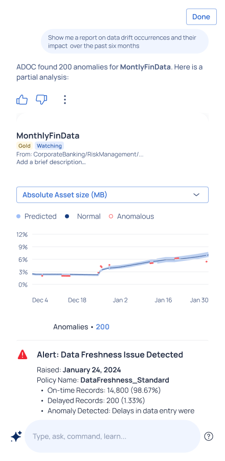
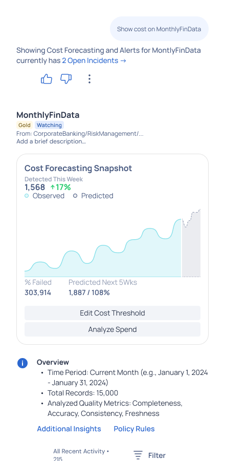
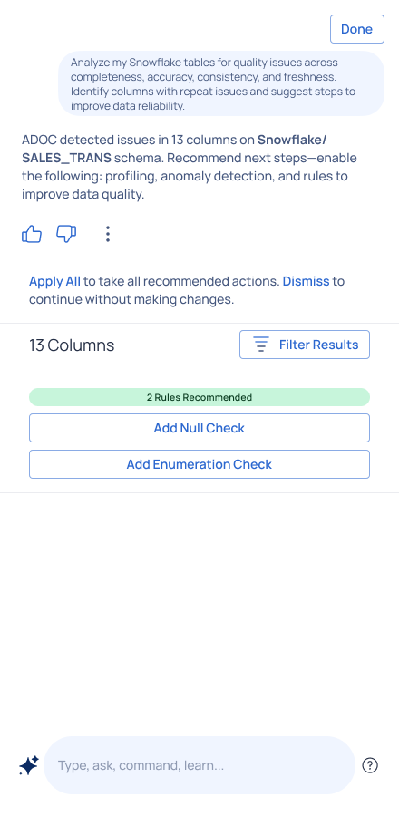
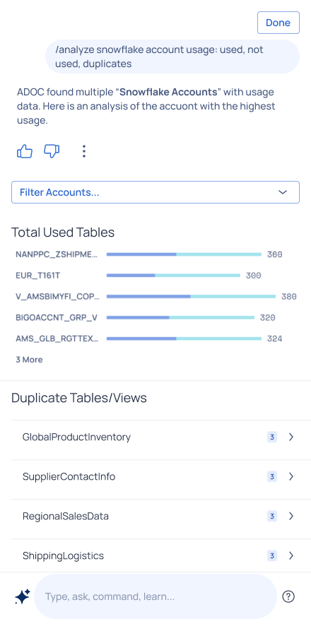

ADOC Copilot is designed to help users manage complex data quality processes at scale. It simplifies the configuration of policies, rules, and reliability checks for data, compute resources, and pipelines. By reducing the complexity of these processes, it enables organizations to maintain high data quality standards while improving efficiency and governance.
Contribution
Principle UX Designer, Interaction Design
Target Users
Analysts, Data Scientists, Data Engineers
Products
Data Observability Platform
Outcome
The Copilot UI improved user satisfaction and adoption rates by enhancing product usability and context awareness. Teams reported faster decision-making and increased productivity.
The platform significantly improved data quality management and operational efficiency.
Faster Decision Making
Reduction in Manual Effort
User Satisfaction
Leveraging machine learning for anomaly detection, cost forecasting, and recommendations, ADOC Copilot minimizes manual intervention and provides proactive insights.
Advanced ML algorithms identify data quality issues and anomalies in real-time.

Predictive analytics for resource usage and cost optimization.
Applied visual trend indicators and predictive alerts, helping users make informed decisions about resource allocation.

Streamlined configuration of data quality policies and rules.
Implemented customizable policy templates and quick-access shortcuts for common configurations.

Comprehensive monitoring of compute resources and pipelines.

Implemented intelligent tooltips and inline suggestions that adapt to user context and experience level, reducing the learning curve for new users while remaining unobtrusive for experts.
Designed proactive UI components that anticipate user needs based on historical patterns and current context, enabling faster decision-making and reducing cognitive load.
Created a dynamic interface that adjusts information density based on user role and task complexity, ensuring relevant information is always accessible without overwhelming the user.
Explore how the Copilot interface enhances data quality management through intelligent automation and user-friendly workflows.
Automated data quality management and resource optimization.
Enhanced data reliability and governance through automated monitoring.
Discover other innovative solutions in data management and user experience design.
View All Projects Data Prep for AI-Driven Enterprises
Data Prep for AI-Driven Enterprises Mobile Data Observability
Mobile Data Observability Autopilot for HR Specialists
Autopilot for HR Specialists